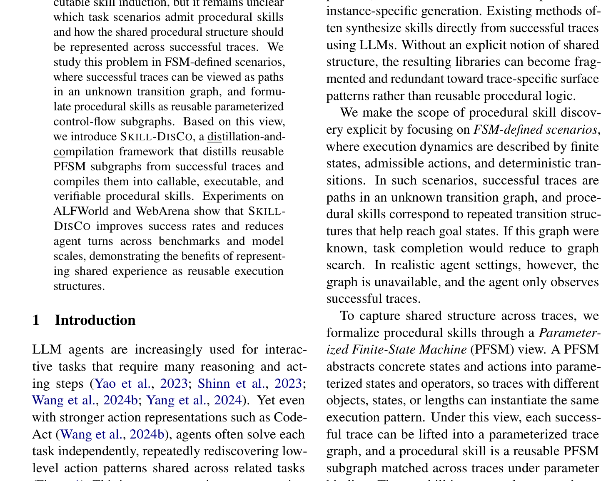
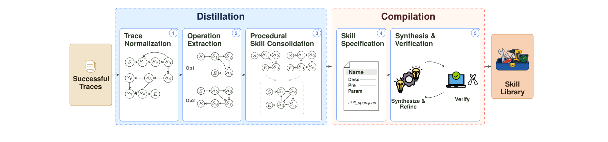

深度拆解微软研究院《SKILL-DISCO: Distilling and Compiling Agent Traces into Reusable Procedural Skills》
文章名字：SKILL-DISCO: Distilling and Compiling Agent Traces into Reusable Procedural Skills
作者与机构：Zhongxin Guo, Danrui Qi（共同一作）, Hanwen Gu, Peng Cheng, Yongqiang Xiong。微软研究院（Microsoft Research）× 北京外国语大学
期刊与会议：arXiv:2606.26669v1（2026.06，预印本）
论文类型：Method（形式化 + 框架 + 实验验证）
一句话定位：用参数化有限状态机（PFSM）把“可复用技能”从模糊的自然语言脚本，重新定义为跨轨迹匹配的可执行控制流子图，并通过“蒸馏 + 编译”把它变成可离线验证、可跨模型迁移的可调用代码。
问题：Agent 经常从零开始重复求解相似任务，造成不必要的推理开销与冗长执行轨迹。此前的工作探索过工作流复用与可执行技能归纳，但哪些任务场景适合沉淀技能、共享的过程结构该如何表示，始终没有被讲清楚。
方法：在FSM 定义的场景（有限状态、可容许动作、确定性转移）下研究该问题——成功轨迹可视为一张未知转移图中的路径，而程序性技能则被形式化为可复用的参数化控制流子图（PFSM 子图）。据此提出 SKILL-DISCO：一个“蒸馏 + 编译”框架，先从成功轨迹中蒸馏出可复用 PFSM 子图，再把它们编译成可调用、可执行、可验证的过程性技能。
贡献：(C1) 显式划定技能发现的适用范围（FSM 场景）；(C2) 把技能形式化为参数绑定下可跨轨迹匹配的控制流子图；(C3) 提出蒸馏-编译框架近似这些结构目标；(C4) 实验证明跨基准、跨模型规模的有效性。
结果：在 ALFWorld 与 WebArena 上，SKILL-DISCO 在不同基准与模型规模下同时提升成功率与压缩 Agent 轮次（如 ALFWorld 上 ReAct +12.7%、轮次 -54.5%；WebArena 上 ReAct +21.6%），证明“把共享经验表示为可复用执行结构”的价值。

图 1：SKILL-DISCO 蒸馏出能依据观测分支、跨 episode 与模型规模迁移的 PFSM 技能，无需重新归纳。
前置概念
FSM 定义的场景：执行动力学可表示为有限状态机 M=(S, A, δ, S0, Sgoal)——状态集 S、动作集 A、确定性转移 δ、初始/目标状态集。若转移图已知，任务完成就退化为图上寻路；但真实 Agent 里这张图是未知的。
原始算子（Primitive Operator）：op=(X, Y, Pre, Post)，有输入输出空间、前置条件与后置谓词——把每个环境动作统一成带契约的可执行单元。
参数化有限状态机（PFSM）：用参数 θ 抽象具体状态与动作，让“涉及不同物体/位置/长度但控制逻辑相同”的执行共享同一结构——这是“技能可复用”的形式化根基。
赛道全景
经验复用大致分两脉：自然语言复用（Reflexion 自反思、AWM 文本工作流、Trace2Skill 结构化技能文档）——知识存在 token 里，部署前不可验证、推理时还要重新解释；可执行工具/技能合成（LATM、CREATOR、Voyander、ASI、SkillWeaver）——把技能变成代码，但多为逐轨迹生成，缺少跨轨迹去重与一致性保证。SKILL-DISCO 的位置：首个语料级（corpus-level）离线编译器，通过语义聚类把等价操作合并为经验证的技能，使库大小随“不同行为数”而非“episode 数”增长。
出现契机（Why Now?）
CodeAct 等代码动作范式成熟，证明“可执行代码 > 自然语言”作为技能载体；同时强模型（GPT-4o / GPT-5）的代码合成与验证能力，使“离线编译 + 持有任务集验证”这条流水线第一次跑得通。
技术瓶颈：可复用技能只有在任务共享稳定执行模式时才有意义；但现有方法直接用 LLM 从单条成功轨迹合成技能，没有显式的“共享结构”概念，导致技能库碎片化、充斥针对单条轨迹表面模式的冗余变体（Voyander 每条成功轨迹提交一个 JS 函数，近乎重复的变体从不合并）。
研究动机：作者把适用范围显式收紧到 FSM 场景——在这里“成功轨迹 = 未知转移图上的路径”，技能 = 反复出现、有助到达目标状态的转移结构。这给了技能一个结构上可判定的定义（在参数绑定下能否匹配多条轨迹），而不是 LLM 拍脑袋写出的脚本。
创新概述：SKILL-DISCO 把“技能发现”拆成两个阶段（见下图）。蒸馏阶段近似那条从原始轨迹到 PFSM 子图的潜在提升函数 φ：先把每条轨迹规范化为可执行中间程序，再切成子目标级操作，最后聚类出共享参数化控制流结构的片段——每个聚类即一个 PFSM 子图候选。编译阶段把每个候选结构变成可调用制品：先构造技能规格（签名/描述/行为要求/元数据），再合成 Python 代码并在留出任务上验证，只有通过验证的技能才进入最终库。图 2 中左侧“Distillation”区（蓝灰节点 S1..S8）展示轨迹规范化、操作抽取、技能合并三步；右侧“Compilation”区展示规格化与合成-验证循环。

图 2：蒸馏阶段把成功轨迹转为可复用 PFSM 子图；编译阶段把它们转为可执行且经验证的技能。
核心形式化
一条成功轨迹被提升为参数化轨迹图 G̃i，技能集 K = {K1,...,Km} 中每个 Kj 是在参数绑定下匹配若干 G̃i 的控制流子图（Kj &prce; G̃i）。理想技能集需同时满足三性：覆盖性（被多条轨迹支持）、效用性（有助到达目标）、紧凑性（不过度具体也不平凡通用）。每个聚类的可复用分用轨迹覆盖率估计：
rk ≈ 1N N∑i=1 𝔼[Kk &prce; G̃i]
𝔼 为指示函数，Kk &prce; G̃i 表示存在某参数绑定使聚类 ck 近似的子图可匹配提升后的轨迹图。
子模块细节穷尽（5 个 Stage）
Stage 1 轨迹规范化（Trace Normalization）。原始日志把推理文本、工具调用、观测、动作历史交织在一起，不暴露控制流。本阶段用 LLM 把每条轨迹转成 Python-like 中间程序 pi：保留原始环境调用与观测、把具体实体替换为带类型的符号变量、把重复动作模式与观测条件决策显式化为循环/分支。它不是最终技能，而是后续抽取的中间表示。
Stage 2 子目标级操作抽取（Operation Extraction）。整条轨迹当技能太具体、单个原始算子当技能又失去复用价值，故抽取中间粒度算子 o=(ν, σ, u, c)——动作导向标识符、自然语言摘要、原始算子序列 u、对应代码片段 c。丢弃 |o|=1 的单步片段（那只是原始算子），只保留多步算子集合 Omulti。
Stage 3 技能合并（Procedural Skill Consolidation）。把共享同一参数化执行结构（即便具体物体/位置/长度不同）的子目标级操作聚类，每个聚类近似一个可复用 PFSM 子图并获得上面定义的可复用分 rk。高覆盖聚类被抽象为技能候选——这一步是“库大小随行为数而非 episode 数增长”的关键。
Stage 4 技能规格化（Skill Specification）。给每个候选技能补上显式规格：(i) 签名（动作导向名称、带默认值的类型化参数、结构化返回类型）；(ii) 描述（既是机器可读 docstring 也是 LLM 选择指南）；(iii) 行为要求（前置条件、后置条件、声明的副作用）；(iv) 元数据（抽象层级、每次调用预期摊销的原始动作数、继承自 rk 的置信分）。规格为合成与验证提供具体判据。
Stage 5 合成与验证（Synthesis & Verification）。把规格合成为实现该行为的 Python 程序 fk，运行时与环境交互并返回结构化输出。在留出集上验证运行时正确性、后置条件满足度、动作节省量；失败技能带反馈重新合成，最多 R 次重试，仍失败则丢弃。最终产出经验证的可执行技能库。
实验配置：两个执行结构不同的数据集——ALFWorld（文本家务：导航/搜索/物体操作）与 WebArena（真实网站 web 导航）。采用严格的归纳/评测分离：技能只从归纳 split 学，只在留出任务上评（ALFWorld 归纳 200 / 评测 134；WebArena 一分为二各 406）。Baseline 两类：基础 Agent（ReAct、CodeAct）与离线技能归纳法（AWMoffline、ASIoffline）。指标：成功率 SR、平均轮次 Avg. Turns。所有技能增强变体把技能签名/描述拼进 prompt 指导 LLM 决策。
表 1：端到端结果（ALFWorld & WebArena，GPT-4o）
| Method | SR (%)↑ | Avg. Turns↓ |
|---|---|---|
| (a) ALFWorld | ||
| ReAct | 82.0 | 19.3 |
| CodeAct | 96.3 | 3.6 |
| AWMoffline | 54.5 | 11.3 |
| ASIoffline | 47.0 | 11.4 |
| SKILL-DISCO + ReAct | 92.4 (+12.7%) | 8.8 (−54.5%) |
| SKILL-DISCO + CodeAct | 99.3 (+3.1%) | 3.2 (−11.3%) |
| (b) WebArena | ||
| ReAct | 23.9 | 5.9 |
| CodeAct | 20.0 | 10.9 |
| AWMoffline | 21.2 | 5.9 |
| ASIoffline | 24.6 | 5.7 |
| SKILL-DISCO + ReAct | 29.1 (+21.6%) | 5.1 (−13.1%) |
| SKILL-DISCO + CodeAct | 22.9 (+14.8%) | 8.5 (−22.0%) |
表注：括号为相对基础 Agent 的变化；粗体最优、下划线次优。所有离线技能法用相同归纳/评测 split。
表 2：跨模型技能迁移（同一 GPT-4o 归纳的技能库）
| Model | Van. SR | +Sk. SR (Δ) | Van. Turns | +Sk. Turns (Δ) |
|---|---|---|---|---|
| (a) ALFWorld | ||||
| Qwen3.5-4B | 61.2 | 91.0 (+48.8%) | 9.0 | 5.0 (−44.4%) |
| Qwen3.5-9B | 54.5 | 98.5 (+80.8%) | 10.8 | 3.4 (−68.2%) |
| GPT-4o-mini | 71.6 | 94.8 (+32.3%) | 7.1 | 4.4 (−38.0%) |
| (b) WebArena | ||||
| Qwen3.5-4B | 10.1 | 18.7 (+85.3%) | 8.6 | 6.8 (−20.4%) |
| GPT-4o-mini | 18.0 | 18.0 (±0.0%) | 7.7 | 7.1 (−7.7%) |
| GPT-5-chat | 32.5 | 37.0 (+13.7%) | 5.3 | 4.8 (−8.6%) |
表注：Δ 为相对原模型的相对变化（节选自论文 Table 2）。
表 3 & 4：技能库紧凑性与流水线消融（ALFWorld）
| Bench/Method | #Sk | Turns↓ | Sk. turns | Avg. prim. steps | Err.(%)↓ |
|---|---|---|---|---|---|
| 表 3 技能使用统计（ALFWorld） | |||||
| ASIoffline | 110 | 11.4 | 1.4 | 0.2 | 75.3 |
| SKILL-DISCO | 5 | 3.2 | 2.6 | 5.6 | 0.0 |
| 表 4 流水线消融（ALFWorld） | |||||
| A1: no distill | 43 | 11.5 | 53.0 (−46.6%) | ||
| A2: no compile | N/A | 3.6 | 97.0 (−2.3%) | ||
| Full SKILL-DISCO | 5 | 3.2 | 99.3 | ||
表注：#Sk 为归纳出的技能数；Err. 为执行错误率；表 4 中括号为相对完整流水线的相对 SR 变化。
本文由 paper-reviewer 拆解生成 · 论文来源：arXiv:2606.26669v1